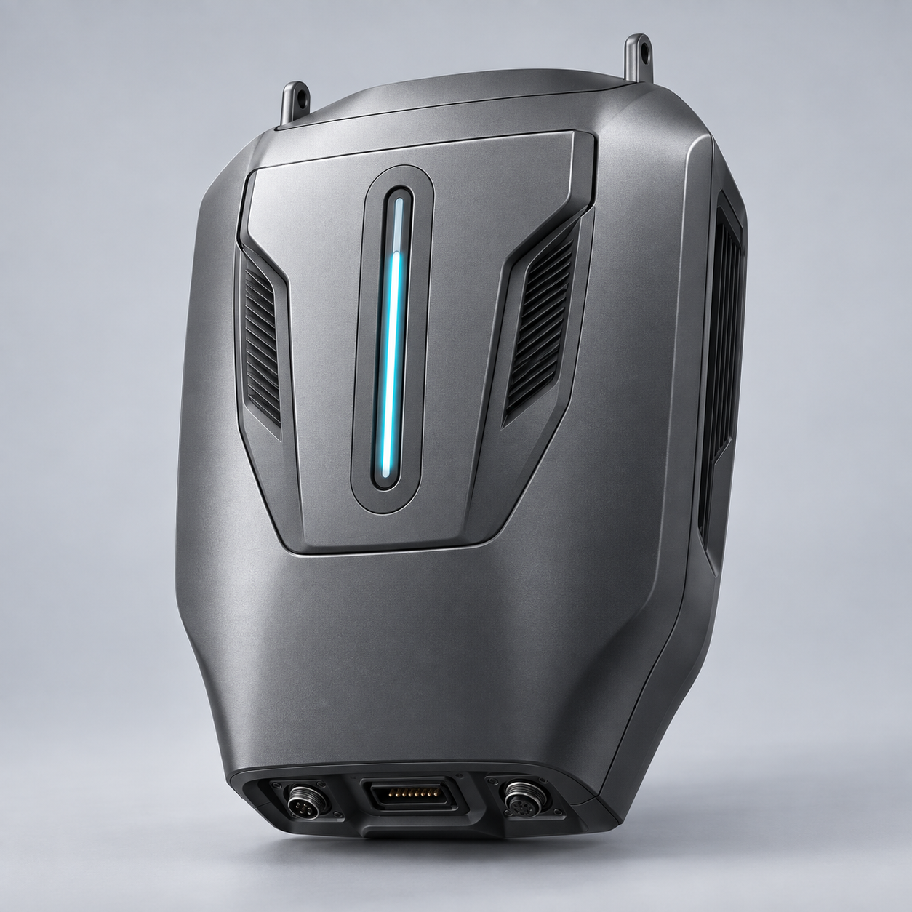

工业设计 · 概念效果图01 / 03

CONNECTION ARCHITECTURE把连接，集中在一起。
拟定接口方案 · 数量与电气规格待确认
宇树 G1 首发适配目标
ROBODOCK 基础 SDK / 外设接入 / 可选板载算力
CANRS-485EthernetUSB
夹爪灵巧手传感器
源自背部一体化安装构想GRAPHITE / 石墨灰
概念图，非实物照片
CHOOSE YOUR STARTING POINT01 / 版本对比
版本介绍
已有计算设备、希望自主开发，或需要预设应用。选择适合团队的交付方式，再配置外设与服务。
01 / CONNECT已有算力，快速接入
基础接入版
- 适合谁
- 已有工作站或计算设备的团队
- 交付什么
- 接入硬件、基础 SDK、驱动与文档
- 如何使用
- 外部设备运行客户程序，背包提供数据与控制接口。
02 / DEVELOP算力随身，自主开发
板载开发版
- 适合谁
- 需要板载开发环境的研发团队
- 交付什么
- 算力平台、基础 SDK 与开发环境
- 如何使用
- 在背包内开发与部署程序，通过 SSH 或本机接口接入。
03 / DEPLOY应用就绪，按需扩展
板载应用版
- 适合谁
- 直接数采、表演，或进行二次开发的团队
- 交付什么
- 开发版全部内容 + 选配应用包
- 如何使用
- 通过 Web 使用预设程序，通过开放接口进行二次开发。
APPLICATION POSSIBILITIES02 / 应用与选配
把平台，接入你的场景。
板载应用版按需求评估应用包与适配服务，保留进一步开发的空间。
01 / CAPTURE五点遥操与数采
围绕遥操作与数据采集，评估设备组合、安装与标定。
02 / PERFORM演示表演
按演示场景确定预设程序、运行条件和交付范围。
03 / ADAPTVLA / SONIC 适配
围绕指定程序评估算力、软件环境与接口适配。
按需选配算力配置 / 存储容量 / 相机与末端设备 / 应用包与适配服务
COMPATIBILITY03 / 兼容设备
先把一套做好，
再连接下一种。
TECHNICAL OVERVIEW04 / 接口与规格
接口清晰，拓展有据。
以下为第一代产品规划，便于讨论选型。
- 通信接口
- CAN / RS-485 / Ethernet / USB 拟定
- 供电能力
- 集中供电与保护 电压、功率及取电方式待确认
- 基础软件
- 基础 SDK、驱动与文档ROS 2 / DDS / Python 接口范围待确认
- 接入版主控
- Orin Nano 8GB 暂定 · 客户程序运行于外部计算设备
- 板载版主控
- Orin NX 16GB 暂定 · 适用于板载开发版与板载应用版
- 开发与使用
- 开发版：SSH 或本机接口
应用版：Web 预设程序 + 开放接口应用性能、基础 Web 与记录范围待验证 / 确认 - 存储容量
- 按项目需求选配 容量与规格待确认
- 安装方式
- 背部安装 + 专用线束 + 手腕转接件
- 换装方式
- 外设独立断电换装（规划）暂停任务、安全停稳后换装并加载配置，减少整机重启G1+ 适配、分路供电控制及热插拔能力待验证
- 尺寸 / 重量
- 待结构设计与样机验证后公布
- 交付版本
- 基础接入版 / 板载开发版 / 板载应用版
- 外设选配
- 夹爪 / 灵巧手 / 腕部相机可同时选择、分别调整数量；具体型号与安装组合按方案确认